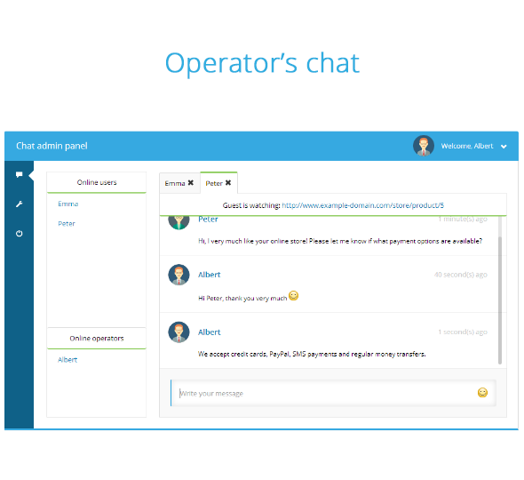

PLANES
PLANES DE DESARROLLO WEB.

Solicitar mi Cotización
ChatPuro
Fácil para los visitantes y el administrador, basta con el nombre y correo electrónico para iniciar el chat, su diseño se ubica en la sección inferior al alcance del usuario, aparece automáticamente para atender las necesidades del usuario y su aviso en audio permite al administrador estar siempre presente.
combina el uso de emoticones con :
--- Fácil de usar por cualquier persona - los visitantes simplemente introduzca su nombre y dirección de correo electrónico y se inicia la charla. Su estilo limpio y moderno encajará a la perfección. Widget aparece automáticamente en los nuevos mensajes y las notificaciones de sonido juega. Combinado con unos emoticones de alta calidad ajustado hará que las conversaciones un placer!
Imaginamos es la agencia Web más reconocida de Colombia gracias a sus más de 4800 proyectos de páginas Web y de software web exitosos. Sin duda...
Siempre en contacto con sus clientes - Chat widget de incrustar en sus páginas web permitirá a los visitantes para hablar con usted en tan sólo unos pocos clics - y usted será capaz de resolver sus problemas de inmediato! Sus clientes estarán muy contentos de no tener que esperar a que una respuesta por correo electrónico.
ChatPuro es una herramienta de comunicación, a través del sitio web los usuarios se conectan con los operadores, con fin de aclarar, resolver o ampliar información relevante para el usuario. Después de estudiar el comportamiento de los sitios de nuestros clientes y descubrir que muchos de ellos recibían visitas únicas y reiteradas, implementamos una herramienta que aumentara la conversión de estas visitas, puesto que muchas de ellas solo requerían de información adicional personalizada para convertir en venta fácilmente.
Fácil de personalizar y traducir
Nos gusta combinar, nuestros chat se personalizan y ajustan de acuerdo al diseño del sitio así como el texto de los mensajes de los botones, de información y de error.
Hola, ¡Qué bueno verte!
Ahora estamos preparando algo que te va a encantar…
no vamos a dañar la sorpresa pero puedes volver pronto y descubrirlo.
WebPuro Diseño de Paginas Web, una Empresa de diseño y desarrollo de sitios web, productos virtuales, tiendas online y portales dinámicos empresariales ubicada en Bogotá.
Múltiples operadores y clientes en el chat
Y como cubrir la demanda, con ChatPuro tienes operadores individuales y departamentos, para segmentar las soluciones que tus clientes requieran, con múltiples operadores en línea que conversan muchos visitantes al tiempo, además de la posibilidad de chatear entre operadores y departamentos. No hay excusa para no estar en línea. Crea el número de operadores que quieras!
Avatars
Puedes otorgar un avatar (imágenes/logo) a tus operadores y tener una experiencia personalizada con tus clientes y usuarios, esta opción también está disponible para los usuarios a través de imágenes o avatares predeterminados.
Al principio sus clientes pueden seleccionar un avatar visual que será visible al lado de sus mensajes en el chat. Esto también se aplica a los operadores de chat. Además, puede cargar usted es dueño de avatares también!
Y qué pasa offline? Alternativa Forma alternativa
No deje que sus visitantes se sientan a solos con sus problemas - widget de chatear proporcionará un formulario de contacto de repliegue cuando le toca estar fuera de línea.
No perderás nada de información, el chat sigue funcionando a través de un formulario, solo que esta vez guarda la consulta y la envía para cuando puedas comunicarte con el vía correo electrónico.
Completo historial
Conversaciones anteriores siempre están disponibles para usted para buscar a través de - usted puede filtrar los resultados por nombres, direcciones de correo electrónico y fechas.
Las conversaciones anteriores siempre estarán disponibles en el historial, podrá filtrar por fecha, operador, correo electrónico. Ahora tiene el control de su registro!

Vea lo que su visitante está mirando!
En la parte superior de la vista de la charla siempre hay un estado en directo de la página de invitados actualmente se encuentra de visita. Ahora usted sabe lo que sus clientes están buscando y ser capaz de responder inmediatamente a sus necesidades! Podrá ver la página de su sitio en la que sus visitantes están buscando y prestar una solución mucho más efectiva a sus necesidades, además de saber cuál de sus productos recibe mayor visualización y consulta de sus clientes. La ola del servicio de calidad ahora con ChatPuro!. En la ventana de sus operadores.
